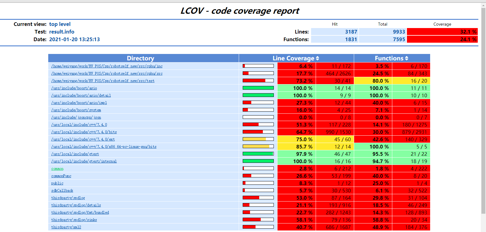

做好了单元测试但是别人并不知道我们的单元测试做的如何，是否覆盖了所有的需要被测试的类方法或者变量等，所以我们需要对单测case做一个覆盖率统计。其实本质就是看代码执行时候运行了你需要测试文件里面的所有代码，比如switch分支 if分支等。
环境配置
安装下载lcov
http://ltp.sourceforge.net/coverage/lcov.php，有rpm包和源码包。（以源码包为例）
解压lcov-x.xx.tar.gz，进入源码包，执行make install 在命令行执行lcov -v，正确输出版本号即安装成功
增加Lcov编译选项
在项目顶层目录CmakeLists.txt中添加以下编译指令：
# coverage option
OPTION (ENABLE_COVERAGE "Use gcov" ON)
MESSAGE(STATUS ENABLE_COVERAGE=${ENABLE_COVERAGE})
IF(ENABLE_COVERAGE)
SET(CMAKE_CXX_FLAGS "${CMAKE_CXX_FLAGS} -fprofile-arcs -ftest-coverage")
SET(CMAKE_C_FLAGS "${CMAKE_C_FLAGS} -fprofile-arcs -ftest-coverage")
SET(CMAKE_EXE_LINKER_FLAGS "${CMAKE_EXE_LINKER_FLAGS} -fprofile-arcs -ftest-coverage")
ENDIF()
使用方式
- 将cmake编译选项设置为-DENABLE_COVERAGE=OFF …，或者将顶层目录CmakeLists.txt中OPTION (ENABLE_COVERAGE “Use gcov” OFF)编译选项手动设置为ON；
- 编译产生
.gcno文件，运行则产生.gcda（与.gcno对应）文件；
- 我们使用的是cmake编译，则编译后生成的.gcno文件存在build目录下的每个项目中，例如：<img src="../../images/cpp/gcno.png" alt="gcno" style="zoom:75%;" />
- 运行我们的测试代码才会产生.gcda文件，如图是运行后产生的。
- 若用户进程并非调用 exit 正常退出，覆盖率统计数据就无法输出，也就无从生成报告了。后台服务程序若非专门设计，一旦启动就很少主动退出，用 kill 杀死进程强制退出时就不会调用 exit，因此没有覆盖率统计结果产生。所以必须当前进程退出后才会产生.gcda文件。
- 使用Lcov生成覆盖率统计文件；
~~~shell lcov -d cmake-build-debug -t test -o test.info -b . -c --no-external
~~~
命令参数含义解释如下：
- -d src_dir： 待覆盖率测试的源码目录，本工程设置为cmake-build-debug；
- -t ‘test’: 目标的名称，此处为test；
- -o ‘test.info’: 生成的覆盖率文件，可自定义，可不带引号；
- -b .：相对目录的起始位置；
- -c: capture，采集覆盖率；
因为我们是cmake进行编译的，所以我们可以直接在build目录下使用lcov命令生成覆盖率报表
~~~shell lcov -c -o result.info -b . -d .
~~~
- 使用genhtml生成覆盖率报表
~~~ genhtml -o report test.info
~~~
- -o result: 输出的目标文件夹，可带路径，此处为当前目录下的result目录；
- test.info: 覆盖率的统计文件；
如果我们需要对覆盖率报表进行过滤，比如把include文件或者系统的文件给过滤掉，可以使用下面的命令
~~~shell lcov --remove result.info '/usr/*' '*/inc/*' -o finalresult.info genhtml finalresult.info -o cppreport
~~~
- html报表生成如下，这个是未过滤的。

相关文章参考：